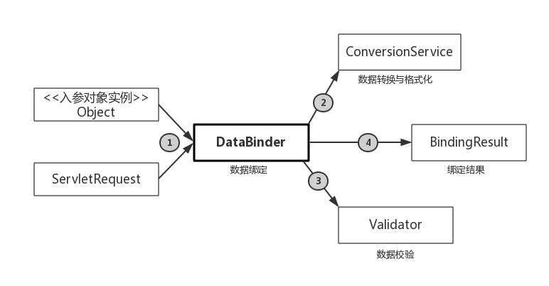

前言
从上一篇博客中介绍的SpringMVC工作流程中我们可以看到，SpringMVC控制器会接收HTTP请求，然后进行业务处理逻辑，最后返回数据模型给视图进行渲染。从这个角度来看，SpringMVC是一个消息传递与处理的框架。那么，SpringMVC将解决两个问题：HTTP请求中的信息是如何转换到控制器的处理方法入参的以及处理方法输出的模型数据又是如何传递给视图进行渲染的。
请求参数传递
@RequestMapping请求映射
我们通过@Controller注解将一个POJO设定为一个能处理HTTP请求的控制。定义了控制器后就可以在控制器的类定义与控制器中的方法定义处标注@RequestMapping注解，用来提供映射信息。这样一来，DispatcherServlet截获HTTP请求后，就可以根据控制器的@RequestMapping提供的映射信息知道该HTTP请求所对应的请求处理方法。
将HTTP请求映射到控制器的处理方法包含一系列的映射规则，具体可以通过请求的URL，请求参数，请求方法，请求头来进行请求的映射。这里就不详细介绍了，在实际使用的时候可以自行google，很简单。
请求处理方法入参
借助@RequestMapping将HTTP请求映射到了对应的处理方法之后，SpringMVC要做的就是将HTTP请求中的信息绑定到处理方法的相应入参中，然后处理方法会进行业务处理，得到返回值。接下来看看SpringMVC是通过何种规则将HTTP请求信息绑定到处理方法的入参中的。
自动绑定入参
如果HTTP请求中的参数名字与入参名字相同，那么无须任何注解SpringMVC可以自动进行两者的绑定。
|
|
如果HTTP请求参数中有同名的参数name,note的话，那么SpringMVC会自动完成绑定。自动绑定必须要求HTTP请求参数名称与入参名称相同，如果不一致是无法获取的。
另外，在没有任何注解的情况下SpringMVC提供了映射POJO的功能，比如，我们新建一个POJO。
|
|
请求方法的签名改成如下形式：
|
|
显然入参POJO的属性名称与HTTP请求中的参数名称一一对应了(HTTP请求中有名为name，note的参数)，这样也可以在没有任何注解的情况下传递参数，SpringMVC会自动进行POJO的映射。
@RequestParam获取参数
SpringMVC提供的自动参数绑定功能只适合于简单的情形，有时候前端的参数命名规则与后台不一致，不能使用自动绑定，那么就要通过注解指导SpringMVC进行参数的传递。
通过在处理方法入参前使用@RequestParam注解，指定HTTP请求中的参数进行绑定，如下所示：
|
|
这时HTTP请求中有两个参数名为NAME与NOTE的参数，这样就可以通过@RequestParam注解进行入参的绑定了。注意，在使用@RequestParam注解的时候，默认是不允许参数为空，如果为空则抛出异常。如果允许参数为空，可以通过修改@RequestParam注解的配置项required=false来完成。
与@RequestParam注解使用方法类似，我们还可以使用@CookieValue注解绑定HTTP请求中的Cookie值到方法入参，或者使用@RequestHeader注解绑定HTTP请求报头的属性值到处理方法入参。
获取请求的属性值
SpringMVC提供了@RequestAttribute注解，帮助我们获取HTTP请求的属性值，传递给控制器处理方法的入参。同样的道理，@SessionAttribute注解可以获取HTTP会话Session对象的属性值，可以传递给处理方法入参，只需要在方法的入参前标注@RequestAttribute或者@SessionAttribute即可，用法都很简单。SpringMVC中还有一个看起来很类似的注解@SessionAttributes，这个注解只能对类进行标注，有什么用呢？通过这个注解可以将处理方法返回的数据模型中的数据缓存到Session中去，这样就可以不用传入HttpSession类型的入参来达到将数据缓存至Session会话中的目的了。
通过URL获取参数
为了符合RESTFul风格(REpresentational State Transfer,简单来说就是URL定位资源，HTTP动作描述资源的操作)的网站设计，可以通过URL传递参数，进行资源的获取，比如：
|
|
当通过URL …/params/1 来访问处理方法时，URL中的1就传递给了处理方法的入参id了。
通过ServletAPI访问请求参数
虽然不推荐直接使用ServletAPI作为处理方法的入参，但是SpringMVC是允许我们这么操作的，SpringMVC会自动将Web层对应的Servlet对象传递给处理方法的入参，比如:
|
|
SpringMVC会自动将HTTP请求对应的ServletAPI的对象传递给处理方法的入参中。
使用HttpMessageConverter
HttpMessageConverter
- StringHttpMessageConverter:将请求信息转换为字符串
- ByteArrayHttpMessageConverter:读/写二进制数据
- SourceHttpMessageConverter:读/写javax.xml.transform.Source类型的数据
- AllEncompassingFormHttpMessageConverter:读取xml表单数据
如果需要装配其他类型的HttpMessageConverter，直接在Spring的Web层容器中定义即可使用。
如何使用HttpMessageConverter
这样一来，如果方法入参中标注了@RequestBody，SpringMVC将选择匹配的HttpMessageConverter将请求消息转换并绑定到方法的入参。如果处理方法标注了@ResponseBody，则SpringMVC选择匹配的HttpMessageConverter将方法返回值转换并输出到响应中。
比如，我们想通过JSON来传递参数，我们只需要配置能处理JSON的HttpMessageConverter，Spring提供了实现类MappingJackson2HttpMessageConverter，我们在Spring Web层容器中为RequestMappingHandlerAdapter装配好这个HttpMessageConverter，并在HTTP请求中的Accept指定JSON类型，这样就可以使得处理方法与客户端通过JSON来交换数据了。
除了使用@RequestBody/@ResponseBody，SpringMVC还提供了HttpEntity
请求参数的绑定
通过上一节，我们已经知道了如何将HTTP请求中的参数绑定到控制器处理方法的入参中去了。但是我们知道HTTP请求中都是字符串类型的，而入参的类型不完全都是字符串，到底是如何完成这个数据绑定的工作的呢？其实当HTTP请求中的数据到达处理方法的之前，SpringMVC为我们做了许多中间工作，比如数据转换，数据格式化，数据校验等等，具体过程如下图所示：

SpringMVC中默认装配了一个核心组件DataBinder用来完成上述任务。如图所示，SpringMVC首先将ServletRequest对象以及处理方法的入参对象实例传递给DataBinder，DataBinder首先调用装配在Spring Web层容器中的ConverionServcie组件进行数据类型的转换和数据格式化工作，将ServletRequest中的数据填充到处理方法的入参对象实例中，然后调用Validator组件对已经绑定了请求参数的入参对象进行数据合法性校验，最后生成数据绑定的结果BindingResult对象。BindingResult对象包含了已经完成数据绑定的入参对象实例以及相应的校验结果，将它们一同传给处理方法。
在上述过程中的每一个步骤SpringMVC都提供了默认的组件完成，也允许用户装配自定义的组件，具体细节可以等到用到的时候google一下，在理解了这些组件的作用之后再使用起来就很容易上手了。
总结
本篇博客回答了开头提出的第一个问题：HTTP请求中的信息是如何转换到控制器的处理方法入参的？SpringMVC内容很多，不可能面面俱到。我觉得对于框架的学习还是要熟能生巧，但是万变不离其宗在掌握了框架的流程与组件之间是如何配合的之后，使用起来就容易了。下篇博客将解决开头提出的第二个问题：处理方法输出的模型数据又是如何传递给视图进行渲染的？